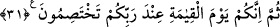

Kıdem denizi gece gündüz nazarında dalgalanmaktadır
Böyle olduğu halde hades kirine bulanırsan yazık olur.
31. Sonra şüphesiz, siz de kıyamet günü, Rabbinizin huzurunda dâvâlaşacaksınız.
“Sonra şüphesiz, siz de” yâni sen ve onlar da “kıyamet günü, Rabbinizin” yâni
sizinle ilgili her hususun mâlikinin/sâhibinin “huzurunda dâvâlaşacaksınız.”
“Siz” zamiri, muhatap zamirinin gâib zamirine baskın kılınmasıyladır (tağlîb). Âyetin
ifâde ettiği dâvalaşma kimsenin inkâr etmediği bir gerçek olmasına rağmen te’kid ile
ifâde edilmesi, muhatapları dâvalaşmayı inkâr konusunda ileri giden kimseler yerine
konulduğu içindir. Çünkü onlar dâvalaşma konusunda gaflete dalmışlardır.
Sen, seninle onlara gönderilen hükümleri ve öğütleri onlara tebliğ ettiğini, Hakk’a
dâvet konusunda hakkıyla çalıştığını, onların ise büyüklenme ve inadda ısrar ettiklerini
söyleyerek onların aleyhine delil getireceksin. Onlar ise “Biz efendilerimize ve
büyüklerimize itâat ettik” (el-Ahzâb, 33/67); “Babalarımızı bu hal üzere bulmuş
idik.” (el-Enbiyâ, 21/53) gibi faydasız mazeretler ileri sürecekler.
Bahru’l-ulûm’da der ki: “En güzel yorum burada umûmî dâvalaşmanın, mü’min olsun
kâfir olsun tüm insanların dünyada iken aralarında geçenlerle ilgili olarak birbirleriyle
dâvalaşmalarının kasdedilmiş olmasıdır. Bunun bir takım delilleri vardır:
1- Hz. Peygamber (s.a.) şöyle buyurmuştur: “Bu ümmetten Rab Teâlâ’nın huzurunda
ilk dâvalaşacak olan Ali ve Muâviye’dir.”[108]
2- Bir hadîste şöyle buyrulmuştur: “Kıyamet günü birbiriyle ilk dâvalaşacak olan
kadın ile erkektir. Vallahi! Kadının dili konuşmayaçak, ama el ve ayakları kendi
aleyhine olmak üzere, işlediği yüz kızartıcı şeylere şâhitlik edecektir. Erkeğin el ve
ayakları da eşine yaptığı eziyetler hakkında aleyhine şâhitlikte bulunacaktır.”[109]
3- Yine Hz. Peygamber (a.s.) şöyle buyurmuştur: “Rab Teâlâ’nın huzurunda Osman
b. Affân’ın hakkını arayan kimse ben olacağım!”[110]
İbrâhim Nehaî’den rivâyet edildiğine göre sahâbe (r.anhüm) şöyle demiştir: “Biz
kardeş olduğumuz halde bizim dâvalaşmamız aceba nedir?” derlerdi. Osman (r.a.) şehid
edilince: “İşte bizim dâvalaşmamız bu imiş!” dediler.
Ebû Saîd Hudrî’den (r.a.) rivâyet edilmiştir: “Biz, Rabbimiz bir, Peygamberimiz bir,
dînimiz bir, kitabımız bir olduğu halde bu dâvalaşma da ne?” derdik. Ancak Sıffîn
Savaşı gerçekleşip de bir kısmımız bir kısmımıza kılıç çekince “Evet, işte o bu imiş!”
dedik.
4- Hz. Peygamber (a.s.) şöyle buyurmuştur: “Kim bir kardeşine namus veya başka
bir hususta haksızlık etmiş ise, altın ve gümüşün olmadığı/geçmediği o gün
gelmezden evvel bugünden onunla helalleşmeye baksın! Çünkü, o gün sâlih bir ameli